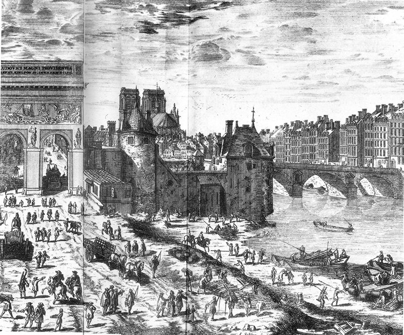
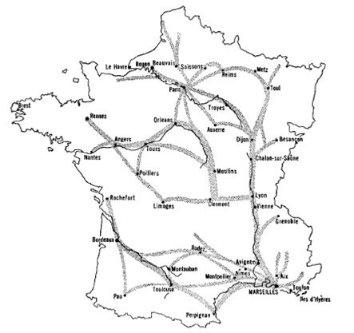

Я отпустить не вправе вам,
Княгиня, лошадей,
Вас по этапу поведут
С конвоем ...
Некрасов. Русск. женщ. 2. Кн. Трубецкая.
Рассмотрим всю цепочку, по которой проходил каторжник от получения решения суда до прибытия на галеры. В качестве основного источника будем использовать упоминавшуюся выше работу У.Бэмфорда, а также сочинения Джона Ховарда, о которых мы говорили ранее, и мемуары Жана Мартеля Mémoires d'un protestant condamné aux galères de France pour cause de religion: Jean Marteilhe de Bergerac.Paris, 1865.
Осужденные к отбытию наказания на галерах помещались в муниципальные тюрьмы, где ожидали формирования очередного этапа в Марсель.

Порт Сен-Бернар и замок Ля Турнель в Париже. Гравюра N.Perelle, 1674.
Люди, признанные пригодными для службы в качестве гребцов в момент их осуждения совсем не обязательно оставались таковыми после пребывания в тюрьмах Франции (как, впрочем, и других стран в семнадцатом веке). Как мы уже неоднократно отмечали, тюрьмы тех дней были не пригодны и не предназначены для длительного заключения. Интендант Пуату (Poitou), сообщавший, что в его распоряжении находятся двадцать «хороших и сильных» заключенных, просил забрать их «чем скорее, тем лучше, чтобы они не умерли.» Осужденные могли дожидаться отправки на галеры до полугода или даже дольше.
Иногда каторжникам удавалось бежать, прежде чем была организована их отправка в Марсель. Провинциальные тюрьмы отличались не только плохими условиями содержания для своих обитателей, но также легкостью и простотой, с которыми, как считалось, заключенные могли бежать из них. В тюрьме Мулен (Moulins) шестнадцать заключенных бежали «через главные ворота» с помощью надзирателя и привратника. В Ренне (Rennes) один надзиратель «обвинялся в том, что передал кусок железа для проделывания отверстия в тюремной стене.» Попавшийся надзиратель был в срочном порядке осужден, с тем, чтобы включить его в ближайший этап каторжников, направлявшихся в Марсель.
Конечно условия в тюрьмах, из которых отправлялись по этапу гребцы на галеры, в семнадцатом веке были не более гуманны, чем веком спустя, когда их шокирующее описание было дано в известном обзоре тюрем Джона Ховарда (John Howard). Луи де Поншартрен, в то время канцлер Франции, в письме генеральному прокурору парламента Бордо описывает «плохое питание» в тюрьмах городов Сомюр (Saumur), Анже (Angers) и Тур(Tours) как причину высокой смертности среди заключенных: «У них нет никакой еды кроме хлеба очень плохого качества; они так слабы, когда из забирают [из тюрем для перехода в Марсель], что не могут вынести ни трудностей дороги, ни хорошего питания, так как сразу же умирают, как только им дадут достаточно поесть. Кандалы, в которые они закованы, также лишают их способности работать [на веслах]. Заключенные [в тюрьмах] должны все время сидеть, что приводит к подагре и другим заболеваниям ног, превращая их в пожизненных инвалидов.» (Depping, G. B. Correspondance administrative sous le regne de Louis XIV. 4 tomes. Paris, 1850-55. II, 955)
Многие каторжники, ожидавшие в тюрьме отправки на галеры, вынужденные продать свою одежду тюремщикам, чтобы выжить, нуждались в обуви и одежде, чтобы быть готовыми для длинного перехода в Марсель. Во времена Кольбера минимальные потребности такого рода («для защиты их от плохой погоды») иногда покрывались за счет казны. Но в середине 1680-х годов, когда потребовались дополнительные средства на покрытие этих нужд в связи с большим количеством осужденных дезертиров и протестантов, ассигнования на эти цели не были увеличены, возможно даже снизились. Прокурор Дижона так описывает морскому министру сложившуюся ситуацию: «Я должен сказать… относительно одежды; с большим трудом была добыта только обувь. Именно потому, что в последние годы этапы стали более многочисленными, чем прежде, отмечаются потери многих из этих несчастных. Без верхней или нижней одежды, подверженные воздействию холода, они легко подхватывали смертельные заболевания во время перехода, и умирали на пути или по прибытии в Марсель.» (Цит. по У.Бэмфорду). Конечно, в планы администрации не входило создание таких ситуаций: они становились следствием плохой экономики и запутанной финансовой ответственности. Понесенные расходы лишь частично возмещались. Эта конкретная проблема существовала, хотя и не в такой явной форме, даже в восемнадцатом веке. Совокупные долги казны за одежду заключенным парламентов Бургундии, Меца и Безансона за 1707-1715 гг. не были еще оплачены и в 1716 г. После 1689 г. такие расходы обычно оплачивались (по крайней мере, частично) провинциальными чиновниками, с последующей их компенсацией казначеем Галерного корпуса; корпус выплачивал компенсации вплоть до 1706 года. Один чиновник в письме морскому министру жаловался: «Я не буду пытаться, монсеньор, рассказывать вам, до какой степени я устал от жалоб купцов, которые поставляли обувь и одежду в прошедшие годы.» Суммарный долг по этой статье составлял 7 421 ливров.
Финансовая система монархии была неспособна обеспечить и другие необходимые потребности транзита осужденных в Марсель. Особенно очевидны были недостатки в наборе и оплате людей, которые сопровождали партии заключенных. Понятно, что это были жесткие люди. «Даже лучшие из них, – как отмечал маркиз де Терн в письме Кольберу в 1667 г., – были много больше озабочены своими собственными интересами, чем хорошей и лояльной службой [королю].» (Depping, G. B. Correspondance administrative sous le regne de Louis XIV. 4 tomes. Paris, 1850-55. II, 935).
Людей, предназначенных на галеры, приковывали к одной цепи группами от пятидесяти до нескольких сотен человек. Они перемещались в Марсель под наблюдением проводника (конвойного), которому помогали охранники. Эти этапы («chaines», «цепи», как назывались эти группы каторжников), существовали в течение длительного времени, но были слабо организованы и плохо управляемы, как убедился Кольбер, когда он пришел к власти. Они отправлялись через неравные промежутки времени и перемещались по разным маршрутам. Кольбер предпринял реорганизацию службы, как он поступал и во многих других сферах, установив приблизительные маршруты для главных партий, и ответвления от этих маршрутов для сбора каторжников, рассеянных по тюрьмам, находящимся в стороне от главных путей. На карте из исследования У.Бэмфорда показан парижский этап, двигающийся от Руана или Парижа вверх по долине Сены и в восточном направлении, собирая осужденных с большей части северных и северо-восточных районов Франции, затем перемещаясь в южном направлении через Дижон к Шалон-сюр-Саону, где обычно брали суда, на которых спускались вниз по Роне до Авиньона, от которого этап сухопутным путем следовал до Марселя. Этап из Бретани начинался в Ренне (Rennes), собирал каторжников по пути следования по долине Луары, наконец, достигал Лиона, откуда также следовал на юг по Роне. Другой этап, из Гиени (Guyenne) начинался в Бордо. Его маршрут пролегал вверх по долине Гаронны в юго-восточном направлении до Тулузы, затем достигая побережья Средиземного моря или следуя сухопутным путем до Марселя. Заключенные из тюрем большей части Лангедока, а также Авиньона, Прованса и Дофине конвоировались в Марсель малыми группами, часто в сопровождении охранников из местных тюрем и конечно же расстояния, которые они проходили, были относительно небольшими.

Карта Франции с маршрутами передвижения этапов в 17 веке (ист. У.Бэмфорд)
Более определенное впечатление от этой системы этапов можно составить в результате анализа количества прибывших в Марсель каторжников за определенный период времени. Так, например, в течение периода от июня 1685 г. по декабрь 1686 г. (включительно) всего (индивидуально или в составе групп) прибыло 1771 человек,. Почти четыре пятых этого количества прибыли в Марсель в составе Парижских, Бретанских и Гасконских этапов. Эти этапы имели в среднем 180, 110 и около 70 человек соответственно. Поскольку за это время (около восемнадцати месяцев) прибыло пять Парижских этапов, общее число прибывших этим путем составило свыше 900 человек. Более мелкие и более частые партии прибывали из таких пунктов, как Гренобль, Ним и Перпиньян (всего около 230 человек). Власти Экса и самого Марселя приговорили к галерам за этот период в общей сложности 79 человек. Совсем небольшие группы прибыли в Марсель из разбросанных по Средиземноморью мест и пару дюжин поступили из-за рубежа (Avignon-Carpentras, Монако, Турин).
Люди, которые присоединялись к большому этапу недалеко от пункта отправления проходили самое большое расстояние. Человек в парижском этапе мог протащиться сотни километров во время перехода, на который в общей сложности требовалось от 26 до 28 дней. Во время этого марша каждый каторжник имел ошейник из толстой полосы железа, который был соединен либо одинарной либо двойной цепью с другими вдоль длинной центральной цепи. Ошейник и цепи для каждого человека были очень тяжелыми. По оценке Лависса (Lavisse, Ernest. "Sur les galeres du roi," Revue de Paris, IV (1897), 225-262) их вес достигал 75 кг. Когда интендантом галер стал Бегон, он потребовал снижения веса кандалов до 45 кг. На практике вес их продолжал варьироваться в широких пределах, он зависел от готовности проводника пойти на риск, снижая вес цепей, и от качества используемого металла: снижение качества железа необходимо вызывало повышение веса кандалов.
Вот как описывает отбытие этапа из парижской тюрьмы Ла Турнель (см рисунок выше) самый известный протестант-галерник Жан Мартель в своих мемуарах, изданных в Амстердаме в 1757 году:
« Отбытие этапа было назначено на 17 декабря. Точно в этот день, в 9 часов утра нас всех вывели из камер на специальный двор перед зáмком. На нас надели ошейники, соединенные цепью попарно с большой цепью длиной три фута, посредине которой имелось круглое кольцо. Нас выстроили в колонну по два и через кольца пропустили длинную цепь, так что мы все вместе оказались связанными одной цепью. [ ... ] Затем нас посадили на землю в ожидании генерального прокурора парламента, который должен был передать нас в руки капитана этапа. [ ... ] К полудню прокурор и три советника парламента прибыли к замку Турнель, сделали перекличку всех каторжников по именам, указав статьи, по которым состоялось осуждение, и передали всех под начало капитана этапа. [ ... ] Все формальности были завершены к трем часам пополудни, мы вышли из Турнеля и, миновав часть города Парижа, остановились на ночлег в Шарантоне.»
Продолжим эту тему в следующий раз